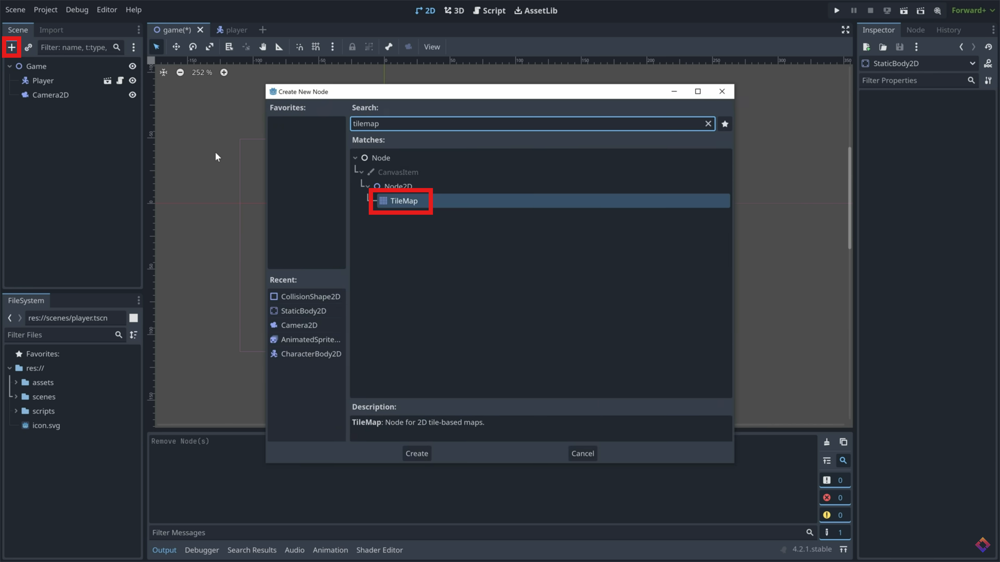

1

Add TileMap
In your game scene, add a 'TileMap' as a child of your game node.
In your game scene, add a 'TileMap' as a child of your game node.
In the inspector window, create a new tileset.

At the bottom of the screen, click 'TileSet'. If you're using the demo assets, drag in 'world_tileset.png' to this screen. Click 'yes' when It asks if you want to automatically create tiles in the atlas.
Using the paint tool in the TimeMap window, select a tile and start to paint in your environment to the game scene. Get Creative!
In the inspector, add a new physics layer to the tilemap. Back in the TileSet window, click the 'paint' tab and paint the new physics layer onto each tile you want to have collision. (That is, each tile you want the player not to fall through.)